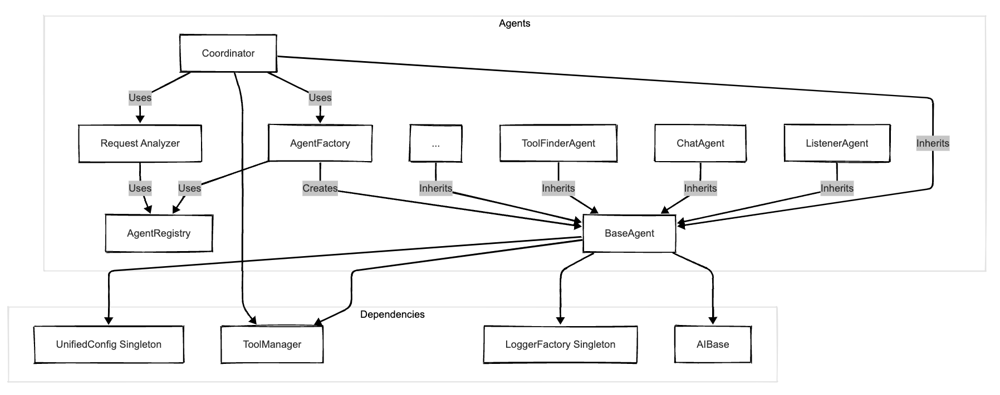
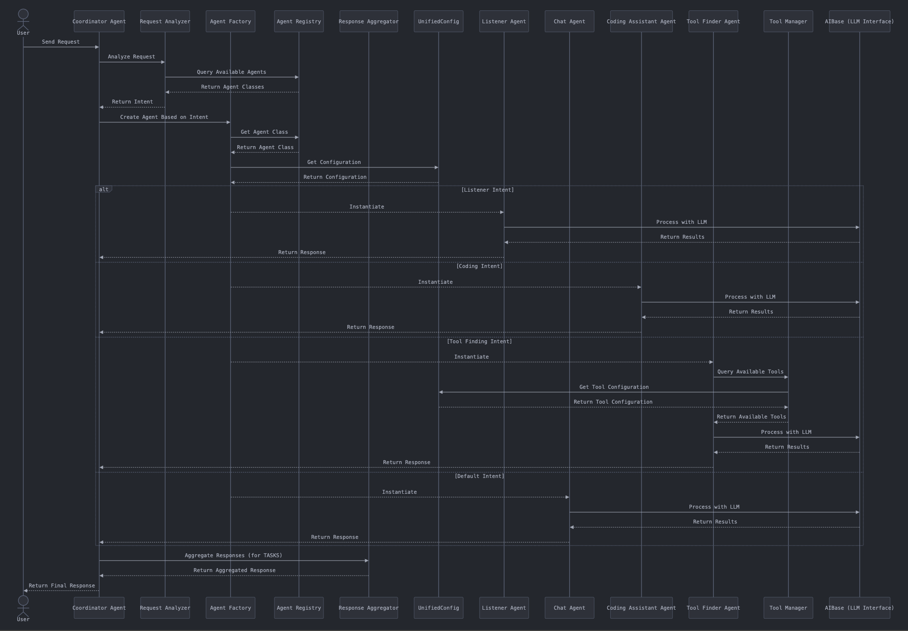

Agent System
Overview
The Agentic AI framework utilizes a flexible agent system centered around a Coordinator agent. This system is designed to analyze incoming user requests, determine the appropriate course of action, and delegate tasks to specialized agents. All agents inherit common functionality from a BaseAgent class and are managed through an AgentRegistry and instantiated by an AgentFactory.
Core Components

-
BaseAgent(src/agents/base_agent.py): -
The foundation for all agents in the system.
- Provides common initialization logic, including loading agent-specific configuration from
agents.ymlviaUnifiedConfig. - Handles basic request processing, including applying model and system prompt overrides specified in the request.
- Includes a default
can_handle()method (returning low confidence) that specialized agents should override. -
Provides basic response enrichment with agent ID and status.
-
Coordinator(src/agents/coordinator.py): -
The central orchestrator of the agent system.
- Acts as the primary entry point for user requests directed at the agent layer.
- Uses
RequestAnalyzerto classify the intent of the incoming request (e.g., META, IMAGE_GENERATION, AUDIO_TRANSCRIPTION, QUESTION, TASK). - Routes requests based on the classified intent:
- META: Handles directly by providing system information (agents, tools).
- IMAGE_GENERATION: Handles directly by calling the
generate_imagetool viaToolManager. - AUDIO_TRANSCRIPTION: Delegates to a specialized agent (e.g.,
ListenerAgent). - QUESTION: Delegates simple queries to a configured default agent (e.g.,
ChatAgent). - TASK: Intended for complex requests potentially requiring multiple agents. The current implementation might delegate to a default handler or requires further development for multi-step/multi-agent planning and execution.
- UNKNOWN: Falls back to the default handler agent.
- Utilizes
AgentFactoryto create instances of agents for delegation. - May use
ResponseAggregator(though TASK handling is currently simplified) to combine results from multiple agents if implemented. -
Checks delegated agent response metadata for
tool_historyand usesFrameworkMessageFormatterto present tool results/errors clearly. -
AgentFactory(src/agents/agent_factory.py): -
Responsible for creating instances of specific agent types.
- Uses
AgentRegistryto know which agent classes correspond to agent IDs. -
Injects necessary dependencies like
UnifiedConfig,ToolManager, and loggers into the created agent instances. -
AgentRegistry(src/agents/agent_registry.py): -
Maintains a mapping between agent IDs (strings used in configuration and code) and their corresponding agent classes.
- Allows for dynamic registration and discovery of available agents.
- Used by
AgentFactoryto find the correct class to instantiate. -
Note:
agent_registrar.pymight contain related or older registration logic. -
RequestAnalyzer(src/agents/request_analyzer.py): -
Analyzes incoming requests primarily using keyword/regex matching to determine user intent (META, IMAGE_GENERATION, AUDIO_TRANSCRIPTION, QUESTION, TASK, UNKNOWN).
- Does not currently use an LLM for this classification.
-
Its classification directly informs the
Coordinator's routing decisions, including whether to handle directly (META, IMAGE_GENERATION) or delegate. -
ResponseAggregator(src/agents/response_aggregator.py): - Designed to combine responses from multiple agents (primarily for complex TASK requests).
- Takes the original request and a list of individual agent responses.
- Synthesizes a final, coherent response for the user.
- Its usage might be limited depending on the current implementation status of multi-agent TASK handling in the
Coordinator.
Specialized Agents
These agents inherit from BaseAgent and perform specific functions:
-
ListenerAgent(src/agents/listener_agent.py): -
Handles audio input, likely performing transcription using a specified speech-to-text model or service.
-
Triggered by the
Coordinatorfor requests identified asAUDIO_TRANSCRIPTION. -
ChatAgent(src/agents/chat_agent.py): -
A general-purpose agent for handling conversational queries or simple questions.
-
Often configured as the default handler in the
CoordinatorforQUESTIONintent or fallbacks. -
CodingAssistantAgent(src/agents/coding_assistant_agent.py): -
Specialized for code-related tasks (generation, explanation, debugging).
-
Likely uses specific system prompts or configurations defined in
agents.yml. -
ToolFinderAgent(src/agents/tool_finder_agent.py): -
Responsible for identifying the most relevant tools from the
ToolManagerto fulfill a user's request. -
May involve an LLM call analyzing the request against the descriptions of available tools.
-
Other Potential Agents: The system may include other specialized agents not explicitly listed here (check
src/agentsandsrc/config/agents.yml).
Request Flow (Simplified)
- User request (potentially initiated via UI or API) reaches the agent system.
- The
Coordinatorreceives the request. CoordinatorusesRequestAnalyzerto classify intent.- If META:
Coordinatorgathers info and responds directly. - If AUDIO:
CoordinatorusesAgentFactoryto getListenerAgent, delegates, and returns the response. - If QUESTION/UNKNOWN:
CoordinatorusesAgentFactoryto get the default agent (e.g.,ChatAgent), delegates, and returns the response. - If TASK:
Coordinator(currently) might delegate to the default handler or execute more complex logic (potentially involvingToolFinderAgent, other specialized agents, andResponseAggregator- requires verification of current implementation). - The chosen agent(s) process the request, potentially using their injected
AIBaseinstance (LLM) andToolManager. - The final response (potentially aggregated) is returned.
Architecture Diagram Prompt

sequenceDiagram
actor User
participant Coord as Coordinator Agent
participant RA as Request Analyzer
participant AF as Agent Factory
participant AR as Agent Registry
participant RAgg as Response Aggregator
participant UC as UnifiedConfig
participant LA as Listener Agent
participant CA as Chat Agent
participant CAA as Coding Assistant Agent
participant TFA as Tool Finder Agent
participant TM as Tool Manager
participant AI as AIBase (LLM Interface)
User->>Coord: Send Request
Coord->>RA: Analyze Request
RA->>AR: Query Available Agents
AR-->>RA: Return Agent Classes
RA-->>Coord: Return Intent
Coord->>AF: Create Agent Based on Intent
AF->>AR: Get Agent Class
AR-->>AF: Return Agent Class
AF->>UC: Get Configuration
UC-->>AF: Return Configuration
alt Listener Intent
AF-->>LA: Instantiate
LA->>AI: Process with LLM
AI-->>LA: Return Results
LA-->>Coord: Return Response
else Coding Intent
AF-->>CAA: Instantiate
CAA->>AI: Process with LLM
AI-->>CAA: Return Results
CAA-->>Coord: Return Response
else Tool Finding Intent
AF-->>TFA: Instantiate
TFA->>TM: Query Available Tools
TM->>UC: Get Tool Configuration
UC-->>TM: Return Tool Configuration
TM-->>TFA: Return Available Tools
TFA->>AI: Process with LLM
AI-->>TFA: Return Results
TFA-->>Coord: Return Response
else Default Intent
AF-->>CA: Instantiate
CA->>AI: Process with LLM
AI-->>CA: Return Results
CA-->>Coord: Return Response
end
Coord->>RAgg: Aggregate Responses (for TASKS)
RAgg-->>Coord: Return Aggregated Response
Coord-->>User: Return Final Response(Note: This diagram represents the logical flow and dependencies based on the code review. Dashed lines indicate inheritance or potential usage.)